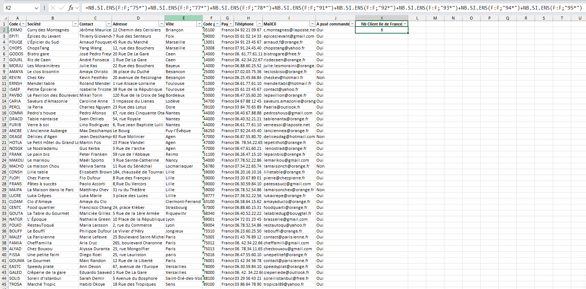

Bilan structuré sur l'étude des données
Schéma Relationnel de la Base de Données
| Table |
Clés primaire / candidates |
Clés étrangère |
| Fournisseur |
N° fournisseur, Société, Contact |
Aucune |
| Produit |
Réf produit |
Code catégorie → Categorie
N° fournisseur → Fournisseur |
| Categorie |
Code catégorie, Nom de catégorie |
Aucune |
| Clientele |
Code client, Société, Contact |
Aucune |
| Commande |
N° commande |
Code client → Clientele |
| DetailCommande |
Clé composée (N° commande, Réf produit) |
N° commande → Commande
Réf produit → Produit |
Ce tableau est le plan de la base de données, montrant comment les informations sont rangées dans des
"tiroirs" séparés appelés tables.
Les tables principales comme "Clientele" ou "Produit" contiennent les listes d'informations (noms
des clients, prix des produits).
Chaque information de ces listes a un identifiant unique, sa "clé primaire".
D'autres tables, comme "Commande", ne stockent pas les noms, mais utilisent ces identifiants
(appelés "clés étrangères") pour créer des liens.
Par exemple, la table "Commande" relie un numéro de commande à un identifiant de client, connectant
l'ordre à la personne.
La table "DetailCommande" est spéciale, car elle relie deux identifiants (celui de la commande et
celui du produit) pour dire "ce produit était dans cette commande".
Ce système évite de répéter l'information et la garde organisée : si un client déménage, on ne
change son adresse qu'à un seul endroit.
Exemple indicateur : Combien y a-t-il de clients en Île-de-France ?
Interpretation
L'objectif de cette requette est de compter le nombre de clients qui reside en Île-de-France.
- Pour compter les clients de l’Île-de-France, on utilise la colonne Code postal de la table
Clientèle
- Les départements d’Île-de-France commencent par 75, 77, 78, 91, 92, 93, 94 ou 95.
Résultat
Le nombre de clients en Île-de-France est de 6.

Formule utilisée dans Excel
=NB.SI(F:F;"75*")+NB.SI(F:F;"77*")+NB.SI(F:F;"78*")+NB.SI(F:F;"91*")+NB.SI(F:F;"92*")+NB.SI(F:F;"93*")+NB.SI(F:F;"94*")+NB.SI(F:F;"95*"
Anomalies et incohérences
Nous avons relevé plusieurs incohérences et données manquantes :
- Doublons dans la table Fournisseur : la colonne N° fournisseur contient des valeurs
répétées alors qu’elle doit être unique (clé primaire).
- Références manquantes :
- Certains clients apparaissent dans la table Commande, mais n’existent pas dans la table
Clientele (exemple : code client FOLK0).
- Certains produits font référence à des catégories inexistantes (par ex. Code catégorie = 9
dans la table Produit alors que la table Categorie n’a que des codes 1 à 8).
- Maria Larson : le client Maria Larson n’existe pas dans la table Clientele, donc on
ne peut pas retrouver ses commandes de novembre 2021 → incohérence avec l’énoncé.
- Marc Randon : ce client existe bien dans la table Clientele, mais il est signalé
comme ayant eu plusieurs problèmes de communication avec KDou. Cela met en évidence un problème de
qualité relation client, mais pas une incohérence de données.
- Noms de pays non uniformisés Et adresse mail non validé : certains pays sont écrits
de plusieurs façons (ex. Pays-Bas et Pays Bas, U.S.A. et Etats-Unis) → risque de fausser les
comptages. Certaine adresse mail ne correspondent pas à la norme par exemple @orange.fr devient
orenge.fr ou bien l’adresse pierre@chezpierre.fr
- Noms de villes incohérents : des variations dans l’orthographe des villes (ex.
Besancon au lieu de Besançon) peuvent poser des problèmes pour les filtres et regroupements.
Conclusion
L'analyse de la base de données KDou, réalisée à travers l'exploration des données et l'application de
méthodologies sous Excel, a permis de répondre avec succès à diverses questions métier. Des informations
spécifiques ont été extraites, telles que le décompte de clients par zone géographique, l'identification de
produits par fournisseur , ou le suivi des commandes par client.
Cependant, cette étude approfondie a surtout révélé des anomalies et des incohérences significatives qui
compromettent la fiabilité des données.
Les problèmes majeurs identifiés sont :
- Des doublons dans les clés primaires, notamment dans la table Fournisseur.
- Des ruptures de l'intégrité référentielle, avec des commandes liées à des clients ou des produits liés à
des catégories inexistants.
- Un manque d'uniformisation des données textuelles (ex : noms de pays ou de villes) et des formats
invalides (ex : adresses e-mail), ce qui fausse les filtres et les analyses.
Pour assurer la pérennité et la fiabilité de la base de données, des actions d'amélioration sont
indispensables. Celles-ci incluent le nettoyage des données (suppression des doublons , correction des
références , normalisation des noms) et le renforcement des règles de gestion par la mise en place de
contraintes d'intégrité. L'utilisation d'un outil plus robuste comme Access est également suggérée pour une
meilleure gestion des données.